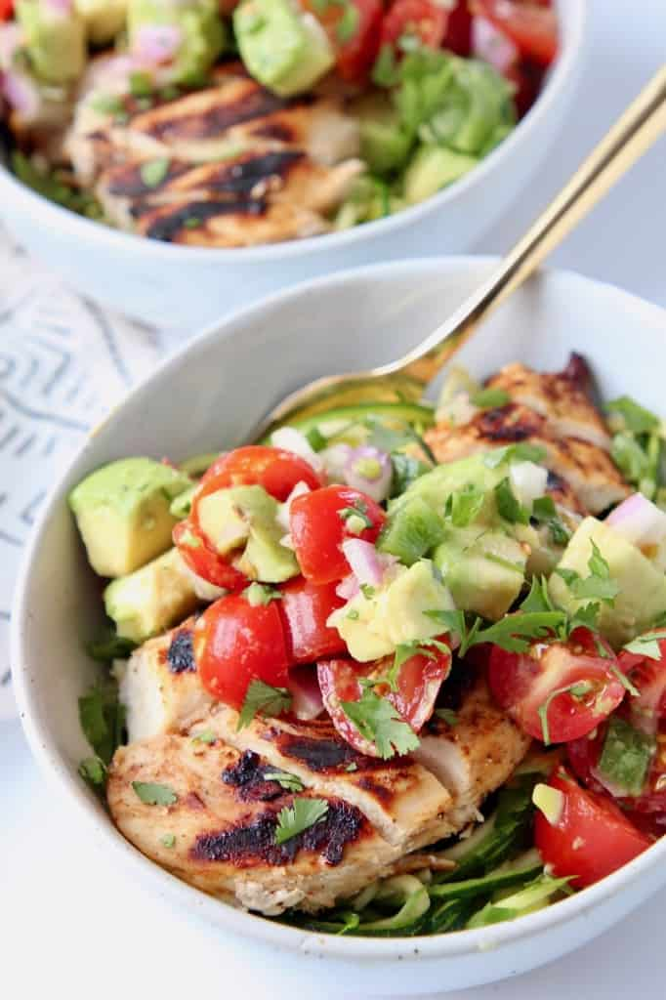

Chipotle Chicken Bowl with Avocado Salsa

Description
Searching for the perfect low carb, high protein meal?
This Chipotle Chicken Bowl is just what you're looking for! At 16 carbs and 53 grams of protein per serving, this gluten free bowl is a delicious addition to a healthy diet!
Ingredients
Marinade for Chicken
- Chipotle Peppers
- Honey
- Extra Virgin Olive Oil
- Red Wine Vinegar
- Garlic
- Oregano
- Cumin
- Black Pepper
- Salt
Chunky Avocado Salsa
- 3 Avocados, diced
- Cherry Tomatoes, quartered
- Diced Red Onions
- Minced Jalapenos
- Lime Juice
- Freshly Chopped Cilantro
- Salt
Directions
- Combine your marinade ingredients in a bowl and place 2 chicken breasts in it to marinate for at least 1 hour
- Mix together your ingredients for the Chunky Avocado Salsa while the chicken marinates
- Grill the chicken on medium high heat for 5-7 minutes per side, or until the internal temperature reaches 165 degrees Farenheit
- Remove the chicken from the grill, let it rest for 5 minutes, then slice and add to the Avocado Salsa
- That's it! Your done! Enjoy your Chipotle Chicken Bowl!
Back to Top
More Recipes!